Galaxy morphology classification with Convolutional Neural Networks

This is a deep learning project that I completed for PH0101 as part of my undergraduate in physics. I’m going to walk you through the entire workflow for this project, including exploratory data analysis, image preprocessing, and finally building a convolutional neural network (CNN) with TensorFlow and the Keras API.
View the Jupyter Notebook (HTML version), which contains the full source code as well as my learning notes.
Index
- Motivation
- Project Background
- Exploratory Data Analysis
- Benchmarking
- Preprocessing
- Convolutional Neural Network
- Results
- Installation
- Usage
- Conclusion
- References
Motivation
As the universe continues to expand, questions remain about how galaxies formed and evolved. To solve this puzzle of cosmic structure, understanding the distribution and types of galaxies as a function of their shapes and sizes is crucial. While the technology, namely telescopes, for imaging distant galaxies improves, the amount of data increases exponentially. In the past, these kinds of classifications were done by manual review of experienced astronomers. However, as the datasets grow to the scale of hundreds of millions of galaxies, manual classification becomes impossible to sustain. Thus, this project aims to analyze images of galaxies and to train a neural network to classify them into their distinct morphology classes.
Project Background
This project is based on the Galaxy Zoo Challenge, a crowdsourced effort, through which thousands of volunteers classified galaxies based on a rather simple decision tree, which I'll explain shortly. The provided dataset consists of 61,578 images with corresponding labels.
The labels themselves represent a decision tree with 37 classes of the format "ClassA.B", where A represents the level in the decision tree (from 1 to 11) and B represents the choices at a given level. This is quite different to most classification problems, as each class represents an attribute, and most galaxy images will contain multiple attributes. The values in each row of features then represents the confidence of the participants that a given answer is correct, from zero to one.
The decision tree described in the paper is as follows:
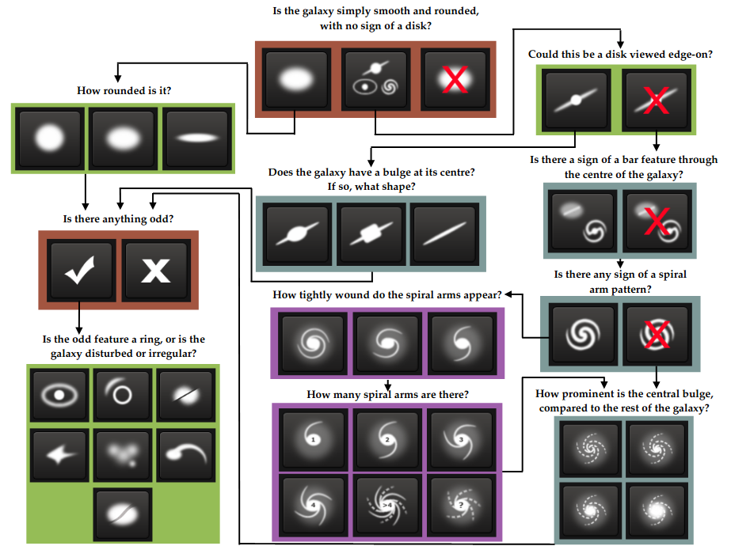
The decision process traverses forwards and backwards through the list of questions, with each questions and answer combination representing a class in the labels. The decision tree must always terminate with an END class, which includes classes like 1.3 (star or artifact).
This resulted in the following probability distributions for all 61,578 galaxies
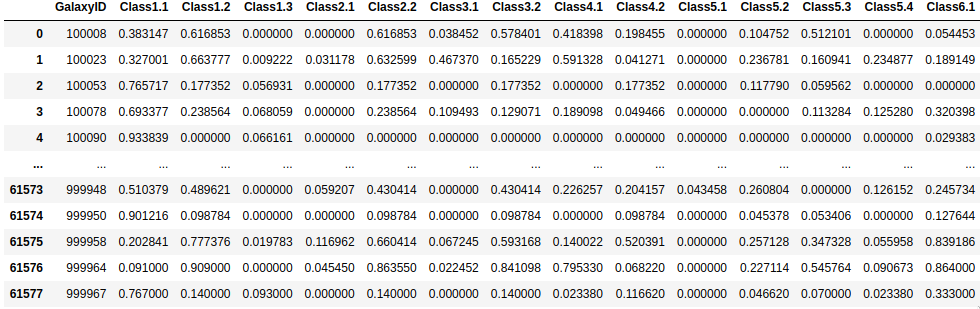
With the general problem defined , it is now time to think about our approach.
My objective is the same as the evaluation metric proposed by the Galaxy Zoo Challenge, optimize the element-wise root-mean-square error (RMSE) or deviation.
Which is defined as:
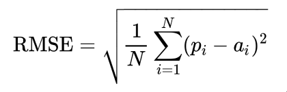
- N is the number of galaxies times the total number of responses
- p is your predicted value
- a is the actual value
This will give us a deviation between our predicted values and the actual values. That being said, what's a good RMSE?
Well, like with many evaluation metrics in regression problems, it all depends on the domain of your problem. You can't really compare RMSE scores unless they are derived from the same regression problem. I will go into further details on this in the section about benchmarking, including why this obvious classification problem is actually about regression.
Exploratory Data Analysis
The objective of my exploratory data analysis was to get a better understanding of the dataset, I wanted to learn about how the classes are distributed, as well as how the galaxies are displayed in the images, to then better inform my preprocessing and deep learning strategies. For a start, this is what the highest confidence example for each feature looks like. Keep in mind that the classes are still representing a decision tree.

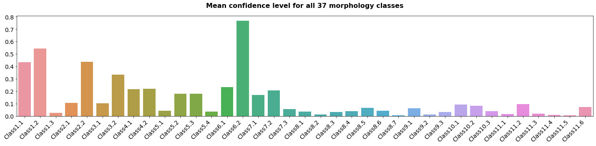
The first thing I looked at was the instances of all classes where the confidence level was above 0.5. This is interesting to me as it will show the classes which are common and which are sparse in the dataset, and my main questions regarding this was whether I needed to apply weights to the loss function. If the classes were all evenly distributed, I could use an out of the box loss function. If not, I would need to write one that applies weights to prevent the neural network from over-prioritizing classes where there isn’t enough data to effectively learn.
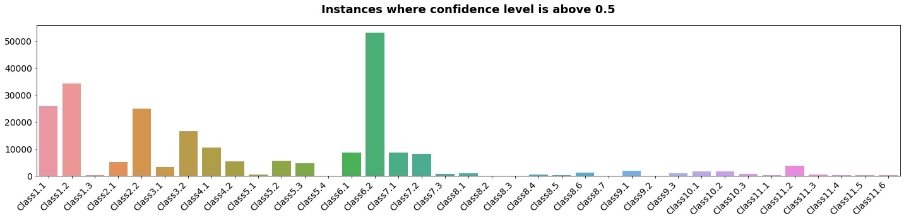
As you can see, the classes
- 6.2 (No odd feature)
- 1.2 (Featured or disc)
- 2.2 (Not edge on)
- 1.1 (Smooth)
are dominating the dataset, which makes sense, as most galaxies in the night sky would share atleast one or more features from this list.
We can also see that stars and artifacts (Class 1.3) are extremely rare in this dataset with only 44 instances; pretty much 0%. This means that we won't have to build a model that filters out these anomalies.
Following that I wanted to find out how strongly the participants agreed with each other. As we don’t have a single source of truth, we’re not really modeling which galaxies have which features but we are actually measuring how confident the human scorers is that a galaxy has a certain attribute.
To understand this better, I plotted correlation matrices for the answers to each question as heatmaps.
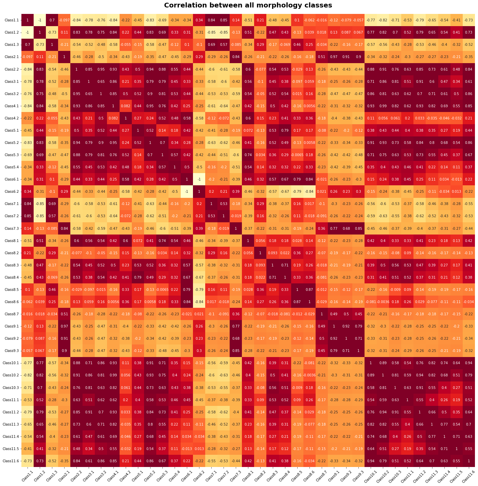
This rather overwhelming heatmap gives us an overview of the correlations between all the 37 morphology classes. We can observe that the relatively rare Class1.3 (stars or other non-galaxies) is correlated with the path through Class1.1 to ambiguous shapes and odd attribtes. Labelers may have confused galaxies with odd appearances and stars. Things like this are a reminder that hand-labeled data does not represent the absolute truth, but rather an approximation.
We can also see from the negative correlation between Class6.1 and Class6.2 that disagreement over whether an images had an odd feature was rare. Although there is high correlation between Class8.3/4/6 , which means that there was some confusion between disturbed, irregular, and merged galaxies.
Zooming into the individual questions shows us how well humans can discern between different attributes.
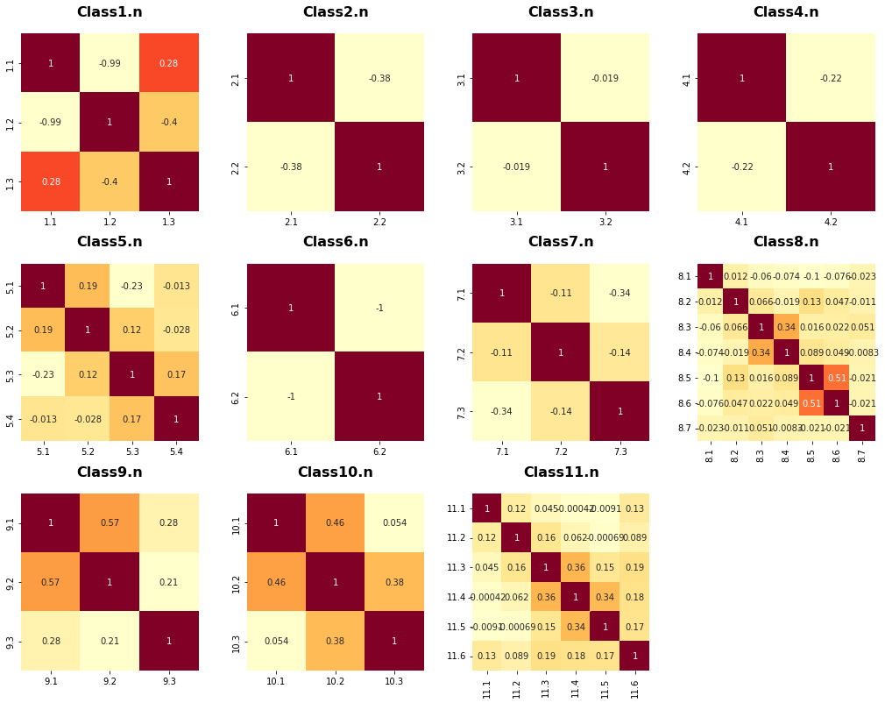
Class6.n shows us the ideal case where it is very unlikely for people to disagree over the galaxies with odd features, while Class9.n reveals that there is regularly confusion over the shape of the bulges and even over whether or not a bulge is present.
Benchmarking
Although at heart, this is a classification problem, the objective of modeling the confidence level of humans classifcation transforms it into a regression problem.
As mentioned before, I’m going to be using an element-wise root mean-squared-error (RMSE) scoring function. Unlike classification problems where things like precision, confusion matrices, recall, and F-scores are easy to understand, RMSE is a bit more abstract. You can’t really say what a "good" RMSE score is, rather you have to set a baseline benchmark for the minimum possible performance and improve from there.
Provived with the dataset is a “central pixel benchmark” which achieved a RMSE of 0.16194. This is found by predicting the classes simply based on the average scores for images with the same central pixel. Looking at the Galaxy Zoo Challenge leaderboard most participants fall somewhere between 0.10 and 0.12 with the winner achieving a RMSE of just 0.07941.
But since this is a learning exercise, I decided to make my own little benchmark. I chose three strategies:
- Linear regression based on the central pixels
- Linear regression based on the average pixels
- Average confidences provided by the human classification
The results?
Central Pixel RMSE: 0.1577
Average Pixel RMSE: 0.1597
Both are better than the provided benchmark! But does this mean anything?
Just the Average Confidence RMSE: 0.1639
Linear regression only just beats the prediction by the average confidences.
Looks like we’ll have to use deep learning after all!
Preprocessing
Each image is of 424x424 pixels in size and comes in color (3 channels).
By examining the dataset, most images had large amount of black margins around the area of interest. Because of this, I decided to write a little region of interest algorithm which detects the most prominent part of the image and then crops each individual image to 150x150 pixels around its region of interest.
I also converted the images to grayscale, not only in order to reduce computational costs but mainly because the colored images gave me worst results while training.
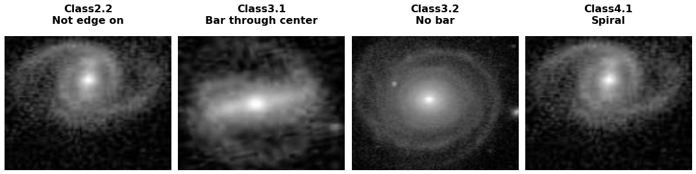
At first, this worked great, but after playing a bunch with the crop factor while monitoring the model performance, I decided on doing a wider crop to allow for full rotation (this will come in handy for data augmentation).
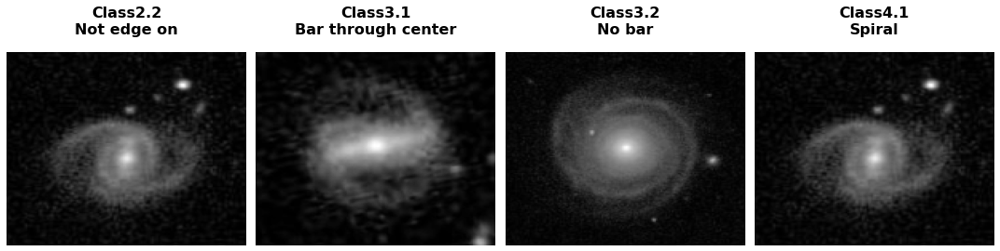
Convolutional Neural Network
I chose to use a convolutional neural network (CNN) for this problem. CNNs are uniquely suited for image classification problems because they can explore local relationships between pixels, through a process we know as convolution, rather than looking at the whole picture all at once. Their ability to detect features in even large images makes them superior to standard feed forward and recurrent neural networks.
Architecture
The network architecture I came up with consists of 6 consecutive convolutional layers, each being activated by ReLU and followed by max-pooling and batch normalization. Towards the end of the network I introducted dropout layers, which in essence just randomly kick out neurons at each step during training, which helps prevent overfitting. After that we have a flatten layer to reduce dimensions for the following fully-connected layers. I chose a set of 3 dense layers, with two of the three being again activiated with ReLU and the last one for the final prediction being activated by a sigmoid function. This last dense layer brings us then to our desired shape of 1x37, for the 37 different morphology classes.
layers.Conv2D(32, (7,7), activation="relu"),layers.BatchNormalization(),layers.MaxPooling2D(pool_size=(2,2)),layers.Conv2D(32, (7,7), activation="relu"),layers.BatchNormalization(),layers.MaxPooling2D(pool_size=(2,2)),layers.Conv2D(64, (5,5), activation="relu"),layers.BatchNormalization(),layers.MaxPooling2D(pool_size=(2,2)),layers.Conv2D(64, (5,5), activation="relu"),layers.BatchNormalization(),layers.MaxPooling2D(pool_size=(2,2)),layers.Conv2D(128, (3,3), activation="relu"),layers.BatchNormalization(),layers.MaxPooling2D(pool_size=(1,1)),layers.Conv2D(256, (3,3), activation="relu"),layers.BatchNormalization(),layers.MaxPooling2D(pool_size=(1,1)),layers.Dropout(0.05),layers.Flatten(),layers.Dense(512, activation="relu"),layers.Droput(0.15),layers.Dense(256, activation="relu"),layers.Dropout(0.15),layers.Dense(37, activation="sigmoid")This configuration resulted in 848,133 total trainable parameters.
Convolutional Layers
Convolutional layers are composed of kernels, or image filters. Filters pass over an image in steps, creating a new image where each pixel is the convolution of the filter matrix and a subsection of the image. Convolution is a matrix operation that is in essence a weighted combination of two matrices. The result of this operation is called a feature map. The feature map is essentially the output of one filter applied to the previous layer.
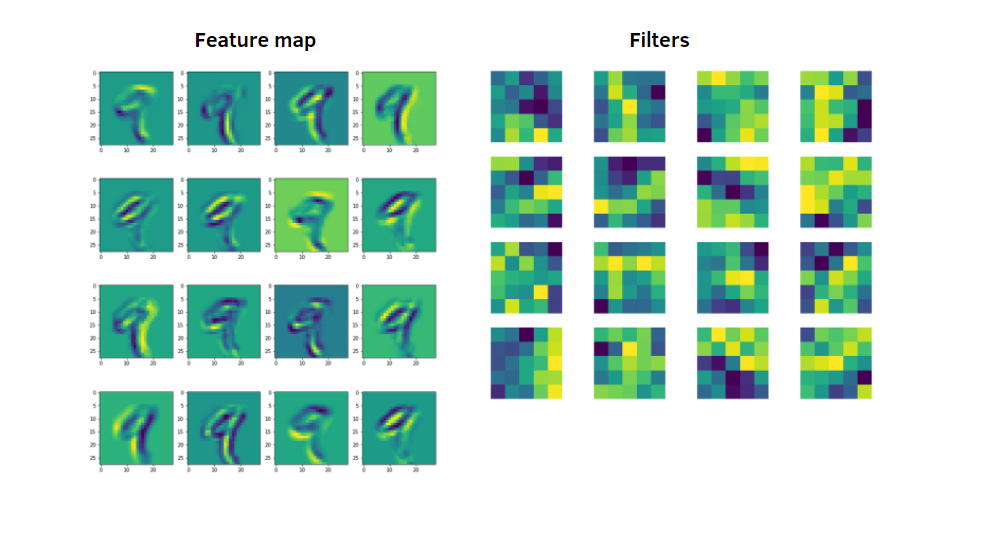 Example of a feature map for recognising handwritten digits
A given filter is drawn across the entire previous layer, moved one pixel at a time, with each position resulting in an activation of a neuron and the output being collected in the feature map. These filters allow the network to analyze local relationships between pixels rather than looking at the entire image. One typical filter is a sharpening filter, in 3x3 form here, where n is the level of sharpening to be applied.
0 -1 0
-1 n -1
0 -1 0
Anyone familiar with image processing will recognize this kernel. What makes a CNN powerful is that the convolutional layers are built from neurons themselves which will in effect learn new filters that are uniquely fitted to identifying and understanding features in the images. It will likely learn an edge detection filter and other standard filters, but it will also, as the network depth increases, learn unique filters that pick up subtle details.
Pooling
After each convolutional layer, we are increasing the width of our network, that is the number of filtered images. As we add on layers, we begin to suffer from the sheer dimensionality of the network, with the number of neurons skyrocketing. This becomes increasingly computationally expensive, and keeping that extra data hurts actually more than it helps. Because our objective with the learned kernels is to recognize patterns, reducing the size of the matrices effectively allows the neural network to zoom out and look at relationships between features recognized at previous convolution steps.
Remember that our ultimate goal is to understand the relationship between the pixels in an image and turn that information into 37 answers to 11 questions. As information flows through the network, higher level features are being extracted and it is at this point that it is important to recognize a wider variety of features without getting bogged down in tiny details. This is where Pooling comes in. Pooling layers decrease the size of our matrices by breaking them down into grids, say 2x2, and reducing them each to a single pixel. There are a few strategies, like max, sum, average, etc, with each having their own strenghts and benefits. I chose to use max pooling, which kind of performs like a sharpening filter, by just taking the maximum value for each patch of the feature map.

Data Augmentation
Data augmentation is a popular technique to artificially increase the diversity of your training set by applying random (but realistic) transformations, such as image rotation, scaling and flipping. I decided to use the preprocessing layers built into TensorFlow to achieve this. Their method doesn't actually increase the size of the dataset like you would expect, but applies the aforementioned transformations in between training. I chose this method over creating completely new images, as my dataset is already large enough.
layers.preprocessing.RandomFlip("horizontal_and_vertical"),layers.preprocessing.RandomRotation(0.3),layers.preprocessing.RandomZoom(height_factor=0.2, width_factor=0.2),layers.preprocessing.RandomContrast(0.05),Training
After some consideration I settled on training my CNN with the Adam optimizer. You could think of Adam as an extension to classical stochastic gradient descent. While traditional SGD maintains a single learning rate for all weight updates and does not adapt during training, Adam and other variants of SGD can adjust the learning rate on the fly during training, which lets them achieve much faster convergence speeds than vanilla SGD. I still don't really know how to optimize their parameters and certainly can't appreciate how they work on a deeper mathematical level, but that is beyond the scope of this project. All you really have to know is that Adam is a little bit faster than stochastic gradient descent with comparable performance. Training the full model over 50 epochs took about 7 hours on a GPU-accelerated workstation (RTX 3080 Ti)
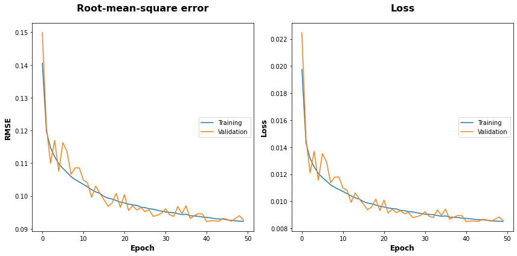
As you can see in both the RMSE over epoch and loss over epoch, the model converges pretty well. Although I initially had trouble with the model overfitting after around 25 epochs. I solved this by increasing the depth of the network from the previous 3 consecutive convolutional layers to 6. I also saw major improvements after applying data augmentation, which helped the model quite a bit to increase its accuracy after epoch 25. Another key improvement came after finding the right combination of kernel and filter sizes. As it turn out CNNs with multiple consecutive convolutional layers learn best with increasing filter and decreasing kernel sizes. This whole process of finding the right combination of hyperparameters, felt a lot like stiring the pile until it starts looking right. I was initially going to do an empirical approach to optimizing my model, meaning I would write a program that creates a bunch of models with different hyperparametes, trains them for a couple of epochs and then evaluates which combination yielded the best results. But due to time constraints I decided to just go with trial and error. Perhaps this is something I am going to revisit the next time I will build a neural network.
Results
My final result? A respectable score of 0.0926! I would have placed 28th in the original Galaxy Zoo competition. I am more than happy with my final score, as I had limited time to work on this project. Again comparing it to the other methods, the convolutional neural network yielded the lowest deviation.
| Method | RMSE | ||
|---|---|---|---|
| LR (central pixel) | 0.1577 | ||
| LR (average pixel) | 0.1597 | ||
| CNN | 0.0926 |
CNNs are once again proving to be a good machine learning method for finding patterns in image data.
Installation
Download the source code
$ git clone https://github.com/paulphys/galaxyclassThe source code already includes instructions for downloading the dataset, but in case you want to get it separately
$ curl -LO https://physics.sh/galaxyclass-data.zipUsage
This is what the file structure of the provided repository looks like.
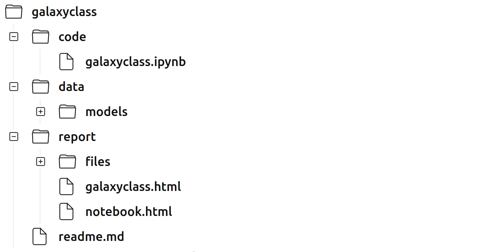
All of the code for this project lives in the code/galaxyclass.ipynb Jupyter Notebook, so make sure you have Jupyter installed before proceeding. Inside of data/models/ you can find my final trained model and the folder report/ contains this document and the HTML version of the notebook.
Jupyter Notebook
Start the notebook
$ jupyter-notebook galaxyclass.ipynbFrom here you just have to execute all cells going from top to bottom, starting with the installation of the dependencies and hardware initialization. If you plan to train the model for yourself, I highly recommend using GPU acceleration, otherwise it is going to take ages to train on the CPU. For that I also included two methods for allocating GPU memory, with the latter restricting access to a predefined amount of memory, in case you want/have to share resources between multiple users or processes.
Conclusion
I had plenty of fun working on this project. This definitely sparked my interests going into computational physics and I feel very grateful to have had this opportunity. Given more time I would experiment more with both the preprocessing, particularly with the region of interest detection cropping off galaxies at the far edge, as well as exploring other network architectures, like ResNet, which have been shown to outperform traditional CNNs. To further improve this model I could also try to implement feature extraction to train the model only on selected features rather than all pixels at once.
All in all, I gained some interesting insights into the computational methods involved in physics research and I am looking forward to doing more of it in the future.
References
[1] Galaxy Zoo : Morphologies derived from visual inspection of galaxies from the Sloan Digital Sky Survey
https://arxiv.org/abs/0804.4483
[2] Galaxy Zoo 2: detailed morphological classifications for 304,122 galaxies from the Sloan Digital Sky Survey
https://arxiv.org/abs/1308.3496
[3] Galaxy Zoo - The Galaxy Challenge
https://www.kaggle.com/c/galaxy-zoo-the-galaxy-challenge/
[4] Maximum Pooling and Average Pooling
https://d2l.ai/chapter_convolutional-neural-networks/pooling.html
[5] Visualizing Feature Maps and Filters
https://medium.com/dataseries/visualizing-the-feature-maps-and-filters-by-convolutional-neural-networks-e1462340518e